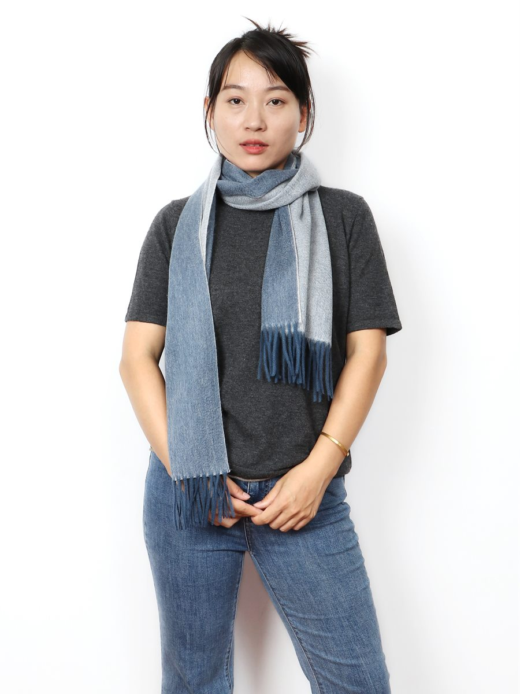
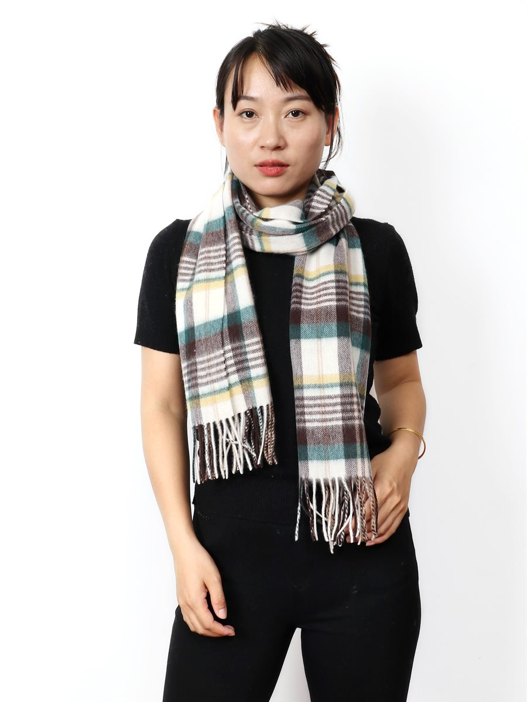
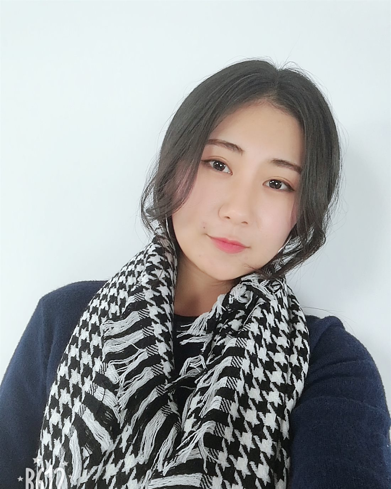
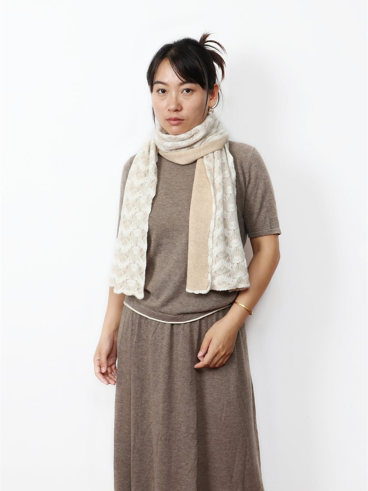
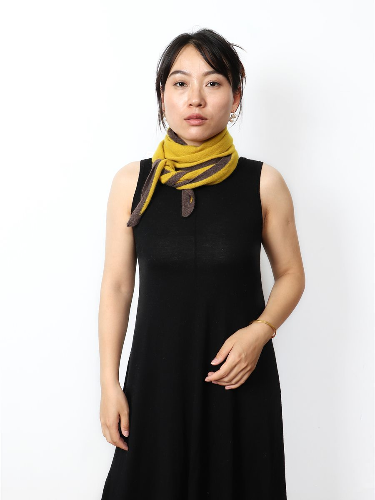

100% Cashmere · Reversible
Reversible scarf
A two-face weave: one colour on each side, so one scarf can be worn two ways.
Products
Our current range covers 100% cashmere scarves, cashmere accessories and silk quilts. Every photograph below shows one of our actual products, photographed by us. We do not use AI-generated images to represent our products.
100% Cashmere Scarves
Woven from 100% cashmere, in patterns and colours chosen for cold-weather wardrobes. Available in several colourways.

100% Cashmere · Reversible
A two-face weave: one colour on each side, so one scarf can be worn two ways.

100% Cashmere · Check
A classic checked pattern in warm neutrals, with fringed ends.

100% Cashmere · Houndstooth
A graphic black-and-ivory houndstooth weave, easy to wear with a coat or a cardigan.
Coming next
Our scarf range changes with the season. New colourways and weaves are added here once their own photographs are ready, so that everything shown on this page is the real product.
Scarf 04
Reserved for the next scarf from our range.
Scarf 05
Reserved for the next scarf from our range.
Scarf 06
Reserved for the next cashmere accessory.
Cashmere Accessories
Cashmere used beyond the classic scarf, for lighter ways of wearing it.

Cashmere · Reversible knit
A light, reversible knit with a lace-flower pattern, for milder days or layering.

Cashmere · Triangle
A compact triangle shaped to sit neatly under a coat, finished with a contrasting edge.
Silk Quilts
Alongside cashmere, we produce and sell silk quilts. Sizes, fill weights and care information vary by model and are listed with each quilt. Because this line is newer on our website, please contact us directly for current availability and specification details.
Email nmgwbyp2023@163.com and we will tell you what is currently available.